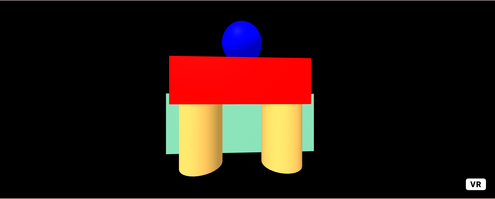
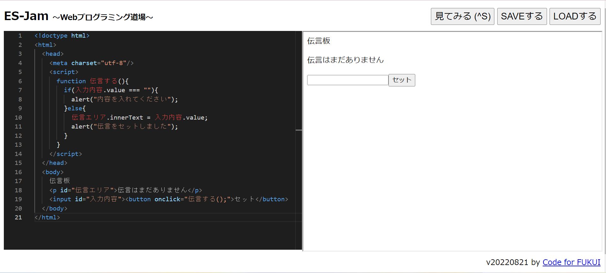

第3週目
3-1 JavaScript体験：VR空間を作る

VR
1.内容
webプログラミング道場，A-Frame-Make WebVRというサイトを用いた．大きくはA-Frame-Make WebVRで拝借したプログラミングの雛型を使い，
自分で数値や色，配置などを変えて，webプログラミング道場で実際に見て調整しながらVR空間を作成した．
2.感想
初めてプログラミング言語を用いてプログラミングをした．プログラミング言語＝難しいというイメージだったが，雛型があったため，迷うことなくプログラミングの作業を進めることができた．
だが，雛型がないことを想定すると，ブロックを用いてプログラミングを作成したほうが初心者には向いているなと感じた．
雛型なしでプログラミングできるようになりたいと思った．
3-2 JavaScript体験：伝言プログラムを作る

伝言板
1.内容
webプログラミング道場，A-Frame-Make WebVRというサイトを用いて，配布されたWebプログラミング入門のプリントを見ながら，実際に１からブラウザでプログラミングをして，その後伝言板を作成した．
2.感想
今回は雛型無しで１からプログラムを作成した．テンプレや説明などはあったが，間違えても気づきにくく，何回もやり直しをしながら作成した．
ただ，プログラミング言語を用いたプログラミングの仕方の概要は学ぶことができたので，一つ成長できた部分かなと感じた．
3-3 JavaScriptプログラムの３次元空間の体験
1.内容
VRゴーグルを使って， webプログラミング道場で作成したVR空間に入ってみた．そこで，球をうったり，空間内を移動したり，物体を持って移動させたりした．
2.感想
VR空間に入るのは前回に引き続き二回目で，慣れなかったが，VR空間という空想の世界で実際に打った球が跳ね返ってきたり，物体を持つことができたり，そういった技術を体験するのは初めてだった．
VRゴーグルを用いた技術をもっと体験してみたいと思った．